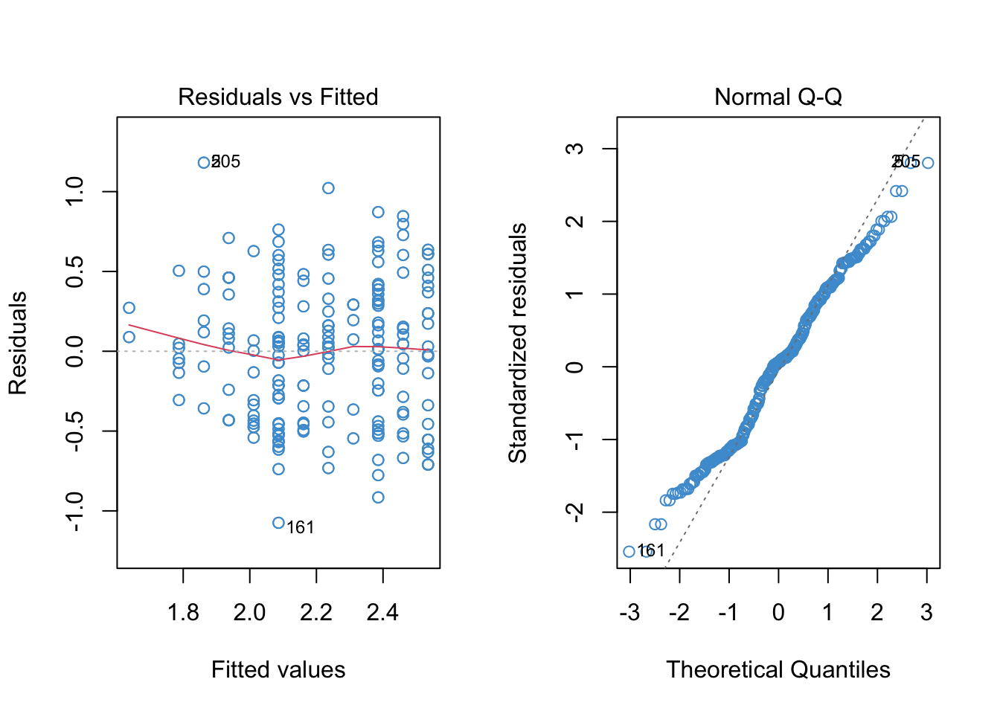
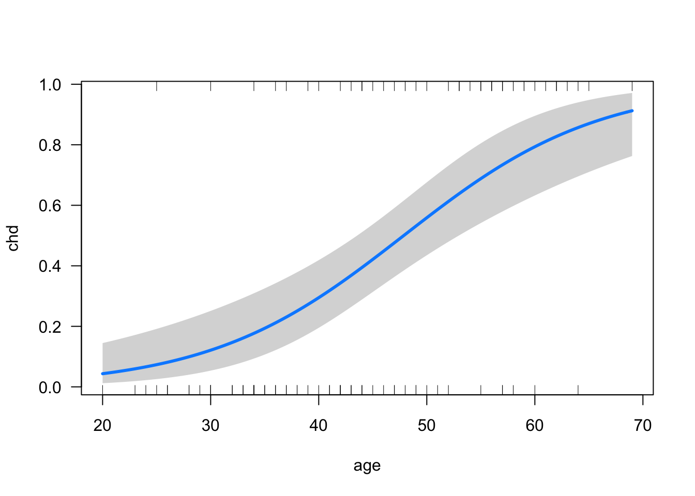

2.12 Exercises
These exercises collect all of the R input used in this chapter into a single step-by-step analysis. It explains how the R input works, and provides some some additional exercises. We will go through this material in class together, so you don’t need to work on it before class (but you can if you want.)
2.12.1 The lm function
The functionlm, short for “linear model”, is used to estimate linear regressions using OLS. It also provides a lot of useful output.
The main argument that the user provides to the lm function is a formula. For the simple regression of Y on X, a formula has the syntax:
Y ~ X
Here Y denotes the outcome variable and X is the predictor variable. The tilde ~ just means “equals”, but the equals sign = is already used to assign values in R, so ~ is used in its place when writing a formula. We will see more complicated formulas as we go through the course. For more information on R’s formula syntax, see help(formula).
Let’s take a closer look using the following two variables from the NELS data.
achmat08: eighth grade math achievement (percent correct on a math test)ses: a composite measure of socio-economic status, on a scale from 0-35
# Load the data. Note that you can click on the .RData file and RStudio will load it
# load("NELS.RData") #Un-comment this line to run
# Attach the data: will dicuss this in class
# attach(NELS) #Un-comment this line to run!
# Scatter plot of math achievment against SES
plot(x = ses, y = achmat08, col = "#4B9CD3")
# Regress math achievement on SES; save output as "mod"
mod <- lm(achmat08 ~ ses)
# Add the regression line to the plot
abline(mod)
# Print out the regression coefficients
coef(mod)## (Intercept) ses
## 48.67803 0.42926Let’s do some quick calculations to check that the lm output corresponds the formulas for the slope and intercept in Section 2.3:
\[ a = \bar Y - b \bar X \quad \text{and} \quad b = \frac{\text{Cov}(X, Y)}{s_X^2} \] We won’t usually do these kind of “manual” calculations, but it is a good way consolidate knowledge presented in the readings with the output presented by R. It is also useful to refresh our memory about some useful R functions and how the R language works.
# Confirm that the slope from lm is equal to the covariance divided by the variance of X
cov_xy <- cov(achmat08, ses)
s_x <- var(ses)
b <- cov_xy / s_x
b## [1] 0.42926# Confirm that the y-intercept is obtained from the two means and the slope
xbar <- mean(ses)
ybar <- mean(achmat08)
a <- ybar - b * xbar
a## [1] 48.678Let’s also check our interpretation of the parameters. If the answers to these questions are not clear, please make sure to ask in class!
What is the predicted value of
achmat08whensesis equal to zero?How much does the predicted value of
achmat08increase for each unit of increase inses?
2.12.2 Variance explained
Above we found out that the regression coefficient was 0.4-ish. Another way to describe the relationships is by considering the amount of variation in \(Y\) that is associated with (or explained by) its relationship with \(X\). Recall that one way to do this is via the variance decomposition
\[ SS_{\text{total}} = SS_{\text{res}} + SS_{\text{reg}}\]
from which we can compute the proportion of variation in Y that is associated with the regression model
\[R^2 = \frac{SS_{\text{reg}}}{SS_{\text{total}}}\]
The R-squared for the example is presented in the output below. You should be able to provide an interpretation of this number, so if it’s not clear make sure to ask in class!
# R-squared from the example
summary(mod)$r.squared## [1] 0.10128As above, let’s compute \(R^2\) “by hand” for our example.
# Compute the sums of squares
ybar <- mean(achmat08)
ss_total <- sum((achmat08 - ybar)^2)
ss_reg <- sum((yhat - ybar)^2)
ss_res <- sum((achmat08 - yhat)^2)
# Check that SS_total = SS_reg + SS_res
ss_total## [1] 43527ss_reg + ss_res## [1] 43527# Compute R-squared
ss_reg/ss_total## [1] 0.10128# Check that R-squared is really equal to the square of the PPMC
cor(achmat08, ses)^2## [1] 0.101282.12.3 Predicted values and residuals
The lm function also returns the residuals \(e_i\) and the predicted values \(\widehat{Y_i}\), which we can access using the $ operator. These are useful for various reasons, especially model diagnostics which we discuss later in the course. For now, lets just take a look at the residual vs fitted plot to illustrate the code.
yhat <- mod$fitted.values
res <- mod$resid
plot(yhat, res, col = "#4B9CD3")
cor(yhat, res)## [1] -2.4274e-16Note that the predicted values are uncorrelated with the residuals – this is always the case in OLS.
2.12.4 Inference
Next let’s talk about statistical inference, or how we can make conclusions about a population based on a sample from that population.
We can use the summary function to test the coefficients in our model.
summary(mod)##
## Call:
## lm(formula = achmat08 ~ ses)
##
## Residuals:
## Min 1Q Median 3Q Max
## -20.600 -6.552 -0.148 6.023 27.663
##
## Coefficients:
## Estimate Std. Error t value Pr(>|t|)
## (Intercept) 48.6780 1.1282 43.15 < 2e-16 ***
## ses 0.4293 0.0573 7.49 3.1e-13 ***
## ---
## Signif. codes: 0 '***' 0.001 '**' 0.01 '*' 0.05 '.' 0.1 ' ' 1
##
## Residual standard error: 8.86 on 498 degrees of freedom
## Multiple R-squared: 0.101, Adjusted R-squared: 0.0995
## F-statistic: 56.1 on 1 and 498 DF, p-value: 3.13e-13In the table, the t-test and p-values are for the null hypothesis that the corresponding coefficient is zero in the population. We can see that the intercept and slope are both significantly different from zero at the .05 level. However, the test of the intercept is not very meaningful (why?).
The text below the table summarizes the output for R-squared, including its F-test, it’s degrees of freedom, and the p-value. (We will talk about adjusted R-square in Chapter 4)
We can also use the confint function to obtain confidence intervals for the regression coefficients. Use help to find out more about the confint function.
confint(mod)## 2.5 % 97.5 %
## (Intercept) 46.46146 50.89461
## ses 0.31668 0.54184Be sure to remember the correct interpretation of confidence intervals: there is a 95% chance that the interval includes the true parameter value (not: there is a 95% chance that the parameter falls in the interval). For example, there is a 95% chance that the interval [.31, .54] includes the true regression coefficient for SES.
2.12.5 Power analysis
Power analyses should ideally be done before the data are collected. Since this class will work with secondary data analyses, most of our analyses will be retrospective. But don’t let this mislead you about the importance of statistical power – you should always do a power analysis before collecting data!!
To do a power analsyis in R, we can install and load the pwr package. If you haven’t installed an R package before, it’s pretty straight forward – but just ask the instructor or a fellow student if you run into any issues.
# Install the package
install.packages("pwr")# Load the package by using the library command
library("pwr")# Use the help menu to see what the package does
help("pwr-package")To do a power analysis for linear regression, it is common to use Cohen’s \(f^2\) as the effect size:
\[f^2 = \frac{R^2}{1-R^2}.\]
Recall that \(R^2\) is the proportion of variance in \(Y\) explained by the model, and so \(1 - R^2\) is the proportion of variance not explained by the model. Thus, \(f^2\) can be interpreted as a signal to noise ratio.
In addition to the effect size, we need to know the degrees of freedom for the F-test of R-square. The pwr functions use the following notation:
uis the degrees of freedom in the numerator of an F-test.vis the degrees of freedom in the denominator of an F-test.
In simple regression, u = 1 and v = N - 2.
As an example of (prospective) power analysis, let’s find out many observations would be required to detect an effet size of R-square = .1, using \(\alpha = .05\) and power = .8. To find the answer, enter the provided information into the pwr.f2.test function, and the function will solve for the “missing piece” – in this case \(v = N - 2\).
# Use the provided values of R2, alpha, power (and u = 1) to solve for v = N - 2
R2 <- .1
f2 <- R2/(1-R2)
pwr.f2.test(u = 1, f2 = f2, sig.level = .05, power = .8)##
## Multiple regression power calculation
##
## u = 1
## v = 70.611
## f2 = 0.11111
## sig.level = 0.05
## power = 0.8In this example we find that \(v = 70.6\). Since \(v = N - 2\), so we know that a sample size of \(N = 72.6\) (rounded up to 73) is required to reject the null hypothesis that \(R^2 = 0\), when the true population value is \(R^2 = .1\), with a power of .8 and using a significance level of .05.
2.12.6 Additional exercises
If time permits, we will address these additional exercises in class.
These exercises replace achmat08 with
achrdg08: eighth grade Reading Achievement (percent correct on a reading test)
Please answer the following questions using R.
Plot
achrdg08againstses. Is there any evidence of nonlinearity in the relationship?What is the correlation between
achrdg08andses? How does it compare to the correlation with Math and SES?How much variation in Reading is explained by SES? Is this more or less than for Math? Is the proportion of variance explained significant at the .05 level?
How much do predicted Reading scores increase for a one unit of increase in SES? Is this a statistically significant at the .05 level?
What are your overall conclusions about the relationship between Academic Achievement and SES in the NELS data?